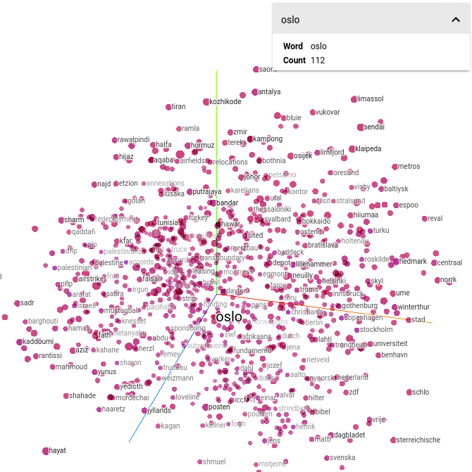
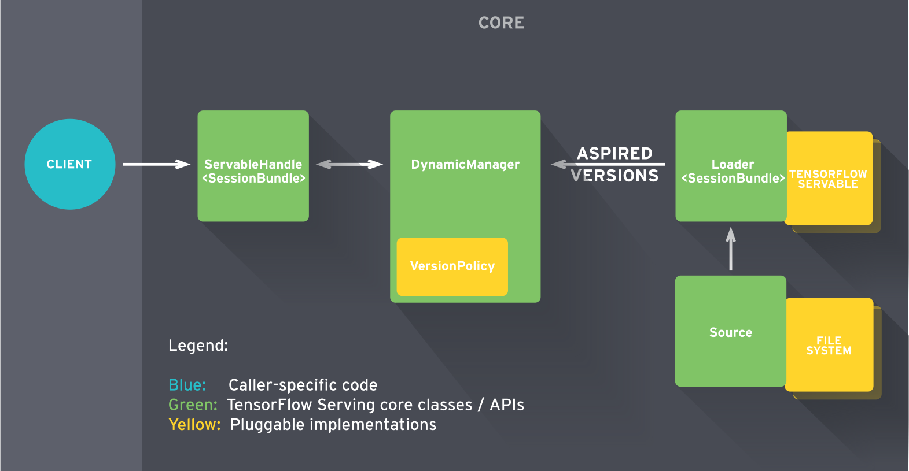

Machine Learning with TensorFlow
Lecture 1
Welcome
Using These Slides
↓, PgDn, n, j |
next slide |
↑, PgUp, p, k |
prev slide |
Esc |
global ctrl+f |
Contact info
Nishant Shukla
nxs@ucla.edu
Goals
You will learn...
- Working knowledge of TensorFlow
- Knowledge of ML & NLP in TensorFlow
- Skills to transfer academic papers to code
Breaking it up...
work ⋅ shop
Workshop loop
- Walkthrough (mostly me)
- Exercise (mostly you)
- Debrief (us)
Breaking it up...
machine ⋅ learning
tensor ⋅ flow
Table of Contents
- Getting started
- Classic algorithms
- Embeddings
- Extra
1.1 Getting started
- Welcome
1.2 Getting started

- Welcome
- Machine Learning
1.3 Getting started

- Welcome
- Machine Learning
- Installing TensorFlow
1.4 Getting started

- Welcome
- Machine Learning
- Installing TensorFlow
- TensorFlow intro
1.5 Getting started

- Welcome
- Machine Learning
- Installing TensorFlow
- TensorFlow intro
- TensorBoard
2.1 Classic algorithms

- Regression
2.2 Classic algorithms

- Regression
- Classification
2.3 Classic algorithms
- Regression
- Classification
- Autoencoder
2.4 Classic algorithms

- Regression
- Classification
- Autoencoder
- Convolutional NN
2.5 Classic algorithms

- Regression
- Classification
- Autoencoder
- Convolutional NN
- Recurrent NN
3.1 Embeddings

- Word2Vec theory
3.2 Embeddings
- Word2Vec theory
- Word2Vec code
3.3 Embeddings

- Word2Vec theory
- Word2Vec code
- Word2Vec TensorBoard
3.4 Embeddings

- Word2Vec theory
- Word2Vec code
- Word2Vec TensorBoard
- Word2Vec optimized
3.5 Embeddings
- Word2Vec theory
- Word2Vec code
- Word2Vec TensorBoard
- Word2Vec optimized
- Sense2Vec theory
4.1 Extra

- Queue
4.2 Extra

- Queue
- TensorFlow Serving